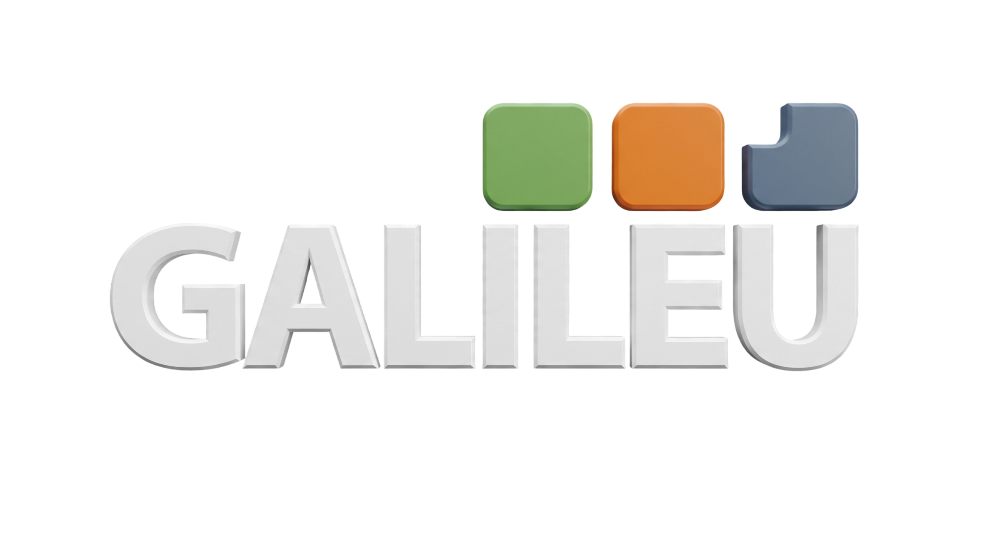
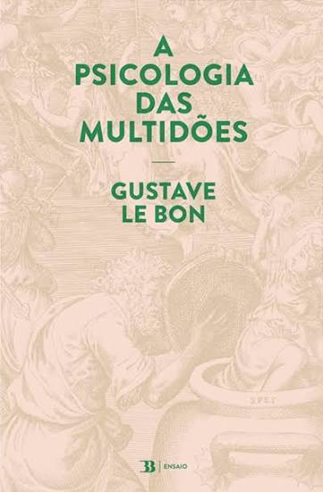

Leituras orientadas
Estudo de obras sobre democracia, política e sociedade.

curso de direitoUm espaço de estudo, debate e reflexão sobre democracia, política e sociedade.
Estudo de obras sobre democracia, política e sociedade.
Encontros para discussão dos temas e leituras propostas.
Organização de simpósios, jornadas, palestras e outras atividades acadêmicas.
O Grupo de Pesquisa Democracia e Política foi criado para reunir estudantes e professores interessados em compreender os principais desafios da democracia e da política na atualidade. A cada semestre, um novo tema orienta nossos encontros semanais.
Também incentivamos a participação em eventos, seminários e congressos, ampliando o contato dos integrantes com a comunidade acadêmica e com as discussões mais relevantes da área.

Nossos encontros explorarão as contribuições da Psicologia para a compreensão da política, da democracia e das relações sociais. Aqui você encontrará as leituras recomendadas e, ao longo das próximas semanas, os registros de cada encontro.

Ernesto Laclau

Guy Debord

Gustave Le Bon

Sigmund Freud
Conheça os principais eventos organizados pelo Grupo de Pesquisa ao longo de sua trajetória.
Acompanhe objetivos, etapas, equipes e resultados dos projetos ativos.
Conheça os responsáveis pela coordenação, organização e desenvolvimento das atividades realizadas pelo Grupo.
O grupo incentiva autoria, protagonismo estudantil, colaboração interdisciplinar e circulação pública do conhecimento.
Ver produçõesO que está acontecendo no Grupo Galileu.
Envie seu interesse para participar dos encontros, integrar projetos ou propor uma parceria acadêmica.